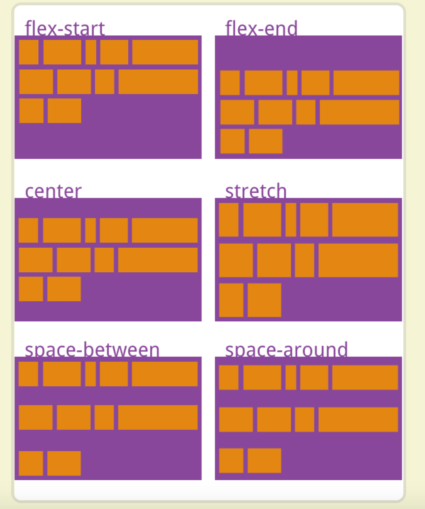

属性定义了多根轴线的对齐方式。如果项目只有一根轴线，该属性不起作用。
align-content 属性用于修改 flex-wrap 属性的行为。类似于 align-items, 但它不是设置弹性子元素的对齐，而是设置各个行的对齐。
ailgn-content:flex-start, 与交叉轴的起点对齐。
ailgn-content:center, 与交叉轴的中点对齐。
ailgn-content:flex-end, 与交叉轴的终点对齐。
ailgn-content:space-between, 与交叉轴两端对齐，轴线之间的间隔平均分布。
ailgn-content:space_around, 每根轴线两侧的间隔都相等。所以，轴线之间的间隔比轴线与边框的间隔大一倍